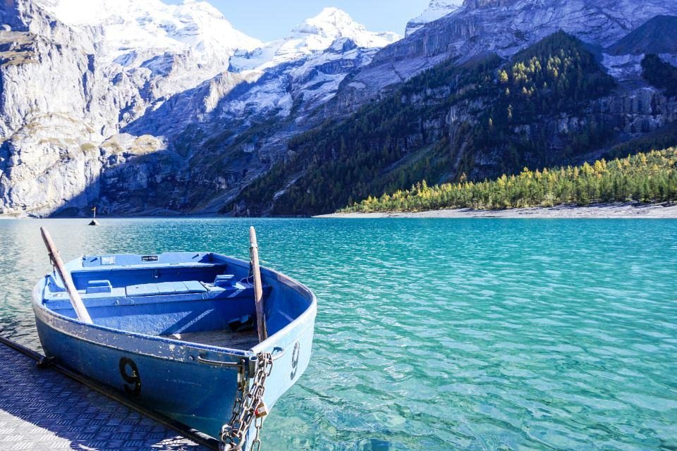
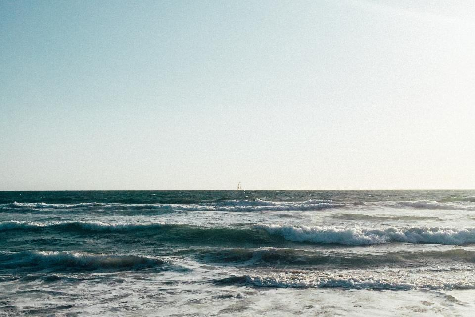

Om Torekov Yacht
Hans Jönsson startade varvet i Torekov 1988 för att ta hand om de stora segelbåtarna som annars skickades till Danmark för vinterförvaring. Sedan 2015 ägs varvet av Carl och Sofie Bexell, som tidigare seglade leveranser mellan Medelhavet och Karibien i åtta år.
Ett litet varv för stora segelbåtar – med uppvärmda hallar, egen riggverkstad och en skeppare som levererar båten dit du vill.
Hans Jönsson startade varvet i Torekov 1988 för att ta hand om de stora segelbåtarna som annars skickades till Danmark för vinterförvaring. Sedan 2015 ägs varvet av Carl och Sofie Bexell, som tidigare seglade leveranser mellan Medelhavet och Karibien i åtta år.
Vi tar emot 64 båtar per vinter – aldrig fler. Alla står inomhus i två hallar med +8 grader och 55 procent luftfuktighet. Vi är 18 anställda, bland dem två riggare, en segelmakare och fyra båtbyggare med inriktning på teak och lack.

38 år med de krävande båtarna
Hans Jönsson startade varvet i Torekov 1988 för att ta hand om de stora segelbåtarna som annars skickades till Danmark för vinterförvaring. Sedan 2015 ägs varvet av Carl och Sofie Bexell, som tidigare seglade leveranser mellan Medelhavet och Karibien i åtta år.
En plats av sextiofyra
Berätta om båten och var du seglar så bokar vi en visning eller en genomgång i din hemmahamn.
- Telefon
- 070-174 06 51
- E-post
- varvet@torekovyacht.se
- Öppettider
- Mån–fre 7–16, visning helger efter bokning
Kontakta oss
- Kontor
- Hamnplan 5
260 93 Torekov - Telefon
- 070-174 06 51
- E-post
- varvet@torekovyacht.se
- Öppettider
- Mån–fre 7–16, visning helger efter bokning